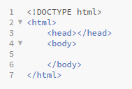
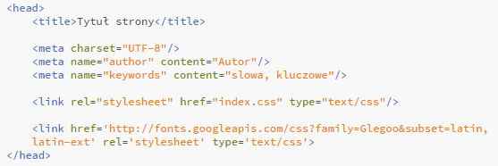
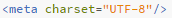
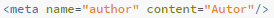
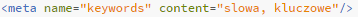

Zobaczmy więc w jaki sposób będzą ułożone postawowe, konieczne elementy na stronie. Przy pisaniu kodu nalezy pamiętać o stosowaniu zanku tabulacji dla zwiększenia czytelności dokumnetu.
Przeanalizujmy pokolei nasz kod...
<!DOCTYPE html> i <html><∕html>
Tak jak wspomnieliśmy w pierwszej lekcji <!DOCTYPE html> informuje przeglądarkę że ma doczynienia z dokumentem html. W znaczniku <html><∕html> natomiast znajduje się cała zawartość kodu.
<head><∕head>
Innaczej "głowa dokumentu". Zawiera podstawowe informacje na temat dokumentu html takie jak: jego nazwa, sposób kodowania, informacje o autorze, słowa kluczowe, zewnętrzne arkusze do niego dołączone oraz wiele innych.
<tile><∕title>
Umieszczamy w tych znacznikach tytuł naszej strony. Będzie widoczny:
- Na pasku narzędzi przeglądarki
- Gdy dodamy stornę do ulubionych
- W wynikach wyszukiwania strony
<meta ... ∕>
Jest to znacznik pojedynczy pełniący różne fukcje w zależnosci od użytych w nim atrybutów. Atrybuty tworzymy poprzez dane słowo go określające, znak równości oraz umieszczoną w cudzysłowiach wartość.
- Ten zancznik meta z atrybutem charset="UTF-8" odpowiada za kodowanie treści dokumentu html w UTF-8 (system kodowania Unicode), czyli "rozszerzeniu" kodu ASCII.
Jest on w stanie użyć do zaszyfrowania jednego znaku od 8 do 32 bitów, podczas gdy ASCII wykożystuje ich tylko 7. Komputerowy zestaw znaków Unicode ma w zamierzeniu obejmować wszystkie pisma używane na świecie. - Kolejne meta jakie poznamy będą zawierały już po dwa atrybuty: name, oraz content. "Name" będzie określało typ zawartosci meta znacznika, natomiast "content" tą właśnie zawartość.
Tak więc atrybut name="author" odnosi się do autora danej strony, natomiast w atrybucie content umieścimy jego imię i nazwisko, np: content="Jan Kowalski". - W tym znaczniku meta name odnosi się do słów kluczowych występujących na stronie poprzez name="keywords", natomiast w zawartości umieścimy po przecinkach kolejne wyrazy-klucze, np: content="kurs, html5, css3".
Inne znaczniki meta:
| name="robots" |
|
Polecenie określa sposób zachowania się robotów-indekserów, czyli specjalnych programów zbierających informacje o stronach w Internecie, wykorzystywane później przez wyszukiwarki. Dodaje się go zwykle tylko, gdy chcemy zablokować dostęp robotowi do wybranych stron. Indeksowanie strony polega na gromadzeniu danych o występujących w niej wyrazach i innych treściach. Śledzenie stron to przechodzenie do podstron, do których odnoszą się odsyłacze w dokumencie. |
| name="generator" | content="Notepad++" | Określa program wykożstany do edycji dokumentu. Na przykład Notepad++. |
| name="desryption" | content="opis" | Opis. |
| name="copyright" | content="copyright" | Copyright. |
<link rel="..." href="..." type="..." ∕>
Tutaj znajdują się wszystkie zawnęrzne linki do przeróżnych akruszy takich jak np:
- CSS
- Java Script
- Google Fonts
| rel="..." | Określa typ relacji pomiędzy obecnym dokuentem html, a podpiętym dokumentem∕źródłem. Może przyjmować takie wartości jak:
|
| href="..." | Umieszczamy w nim konkretny link do arkusza. |
| type="..." | Określa typ dołączonego źródła, np plik tekstowy∕arkusz stylów: type="txt∕css" |
<body> <∕body>
Body, czyli innaczej "ciało" dokumentu html zawiera w sobie wszystkie elementy, które mają pojawić się na stronie. Na początku poznajmy podstawowe struktury, takie jak nagłówki i "pojemniki" na tekst.
| <h1><∕h1> do <h6><∕h6> | Określa nagłówki na stronie, gdzie <h1> to największy nagłówek, a <h6> najmniejszy. |
| <p><∕p> | Tu umieszczamy tekst, który ma być widoczny na stronie. Gdyby był on już wcześniej sformatowany, przeglądarka zignorowała by to i na stronie nic nie uległo by zmianie. |